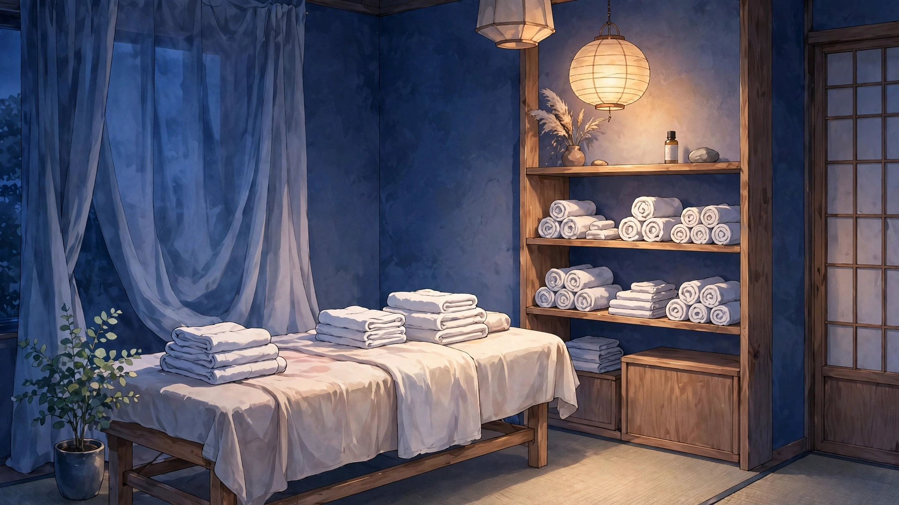

不安解消Q&A2026-11-27
着替えやタオルはどうなっているの？男性セラピストが初めての女性のための服装・タオルワークQ&A｜女性専用サロンで確認したいポイント
男性セラピストの施術を初めて受ける女性から多い「着替えやタオルはどうなっているの？」という質問にQ&Aで回答。当日の服装の選び方、お着替えのときの退室、施術中のタオルワーク、オイルのあとのシャワーまで、女性専用サロンで予約前に確認したいポイントをまとめました。
コラム一覧 ＞ 不安解消Q&A
不安解消Q&A2026-11-20

「男性セラピストの施術を受けてみたいけれど、個室で二人きりになるのが不安」。初めての方からいちばん多く寄せられるのが、この声です。技術や料金の前に、まずは「どんな空間で、どんなふうに施術が進むのか」を知りたい——それはごく自然な気持ちです。
このコラムでは、「個室ですか？」という質問を入口に、男性セラピストの施術を受ける前に確認しておきたいポイントをQ&A形式でまとめました。個室の意味、施術範囲の決め方、着替えやタオルの配慮、施術中に伝えたいときの伝え方まで、予約の前に知っておくと安心できる内容です。
「個室」といっても、壁で仕切られた完全個室、カーテンで仕切られた半個室、貸切の施術室など、店舗によって形はさまざまです。「完全個室」と書かれていても、どんな仕切りなのかは店舗ごとに違います。まずは公式サイトや店舗ページで「完全個室」と明記されているかを確認し、気になる場合は予約の前にLINEなどで「施術室は壁で仕切られた個室ですか」と一言たずねてみるのがおすすめです。
あわせて確認しておきたいのは、施術室の出入りのしかたです。たとえば「お着替えの際、セラピストは席を外しますか」「施術中に他の人が入ってくることはありますか」といった点です。安心できるお店は、こうした質問にも具体的に答えてくれます。返事があいまいだったり、質問自体を嫌がったりする様子があれば、そのお店は見送るのもひとつの判断です。
このポータルでは、掲載店に「施術範囲の事前説明、施術部位以外へのタオル掛け、お着替え時の退室」などの配慮を掲載基準として守っていただいています。店舗ページの「安心の配慮」の欄にも、個室かどうかやタオルワークの内容が書かれていますので、予約の前にぜひご確認ください。
施術の前には、その日の体調や気になる部位、触れられたくない部位があるかどうかを確認するカウンセリングがあります。施術範囲の事前説明を行い、納得してから施術に入るのが、安心できるお店の進め方です。「ここは触れないでほしい」という希望は、予約時や施術前のタイミングで伝えておくと、施術者も範囲を調整しやすくなります。
施術中でも、気になることがあればその場で伝えてかまいません。「この部位は今日はやめておきたい」「もう少し弱くしてほしい」——短い一言で十分です。施術者はその情報をもとに、部位や圧を調整します。遠慮して我慢してしまうと、施術が合わないまま終わってしまうこともあります。伝えることは、施術をより自分に合ったものにするための大切なやり取りです。
また、痛みが強いときやしびれを感じるときは、無理をせずに伝えてください。体の状態は日によって変わるため、その日の体調を正直に伝えてもらうことが、より自分に合った施術につながります。
お着替えの際、セラピストは席を外します。施術着やタオルの用意は店舗によって異なりますので、予約の前に各店舗の詳細ページと公式サイトでご確認ください。施術着の貸し出しがあるお店もあれば、動きやすい服装での来店をお願いしているお店もあります。
施術中は、施術部位以外にはタオルを掛け、必要な部分だけを出して施術する「タオルワーク」が基本です。たとえば背中の施術では、背中だけを出して他はタオルで覆います。タオルを掛けたままの状態で施術を受けるので、露出への不安が気になる方も、まずはこの仕組みを知っておくと安心です。
シャワーについては、店舗によって完備しているところと、そうでないところがあります。オイルマッサージのあとにシャワーを浴びたい方は、店舗ページの「シャワー完備」のタグや、条件検索の「シャワー完備」で絞り込んで探すのがおすすめです。
圧の強さ、施術の進め方、室温、音楽の音量——気になることは、施術中にその場で伝えてかまいません。「もう少し弱く」「ここは飛ばしてほしい」「寒いのでタオルをもう一枚」など、短い一言で十分です。施術者は、あなたの声を聞きながら進めるのが仕事です。伝えることを遠慮する必要はありません。
もし「言いづらいな」と感じるときは、施術前のカウンセリングで「施術中に伝えにくいことがあったら、どう声をかければいいですか」と聞いておくのもおすすめです。合図の決め方を先に話しておくと、施術中に迷わずに済みます。
なお、施術を受けている途中で「やっぱり今日はここまでにしたい」と思ったときも、そのまま伝えてかまいません。施術を受けるかどうか、どこまで受けるかを決めるのは、あなた自身です。
個室かどうかは、安心して施術を受けるための大切な条件のひとつです。完全個室かどうか、施術範囲の説明があるか、着替えやタオルの配慮が明記されているか——この3点を予約の前に確認しておくと、初めての男性セラピストの施術も、ずっと受けやすくなります。不安な点があれば、予約の前に各店舗のLINE公式から相談することもできます。「こんなことを聞いてもいいのかな」と迷う質問こそ、遠慮なく送ってください。まずは店舗ページと、初めての方へ（よくある質問）もあわせてご確認ください。
男性セラピストの施術を初めて受ける女性から多い「着替えやタオルはどうなっているの？」という質問にQ&Aで回答。当日の服装の選び方、お着替えのときの退室、施術中のタオルワーク、オイルのあとのシャワーまで、女性専用サロンで予約前に確認したいポイントをまとめました。

梅田の女性専用サロン「YinYang-Harmony（梅田）」をご紹介。タントラマッサージ・ヒーリングの考え方、女性専用・完全予約制の安心の仕組み、料金とアクセス、初めての方が予約前に知っておきたいことをまとめました。
男性セラピストの開業・経営をサポートしています
文章相談（税込5,000円）や、ホームページ制作・SEO設計などの支援メニューをご用意しています。
noteに書けない裏話を、LINEでお届けします
運営者（222工房）のLINEでは、セラピスト向けに集客と運営の裏側を週1回ペースで配信しています。登録特典の裏話・第1話は登録後すぐにお渡しします。